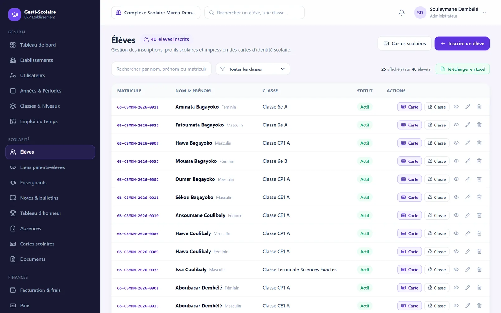
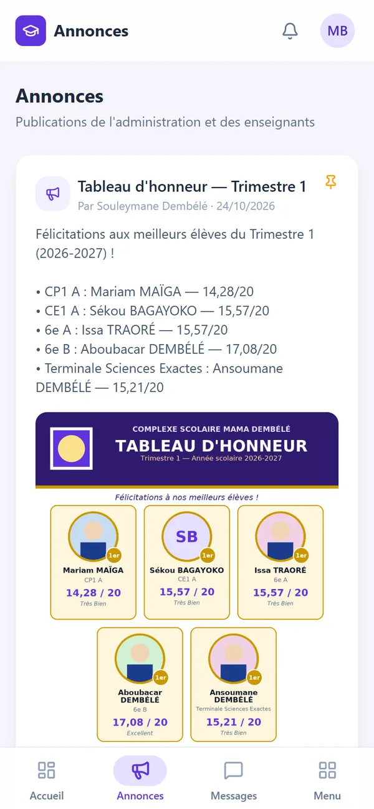
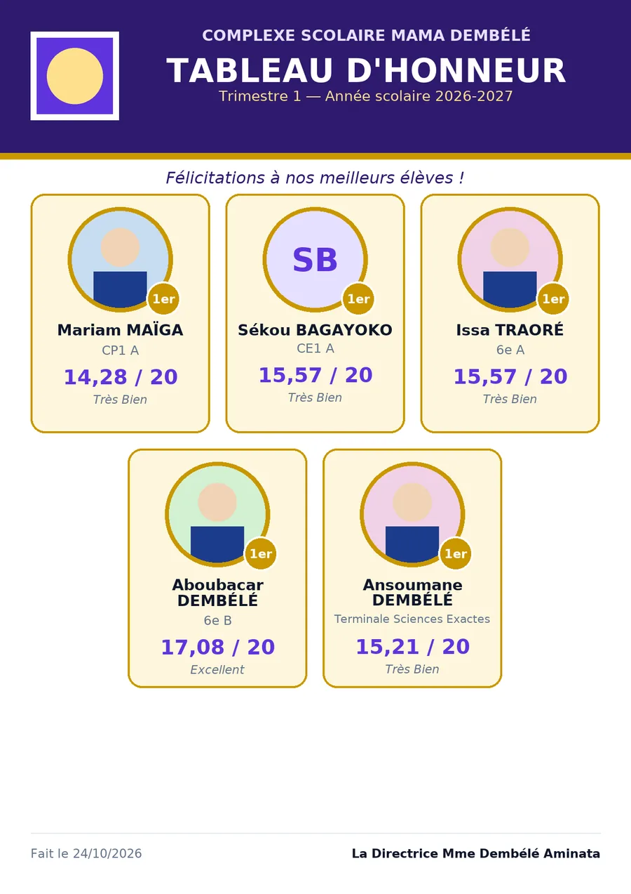
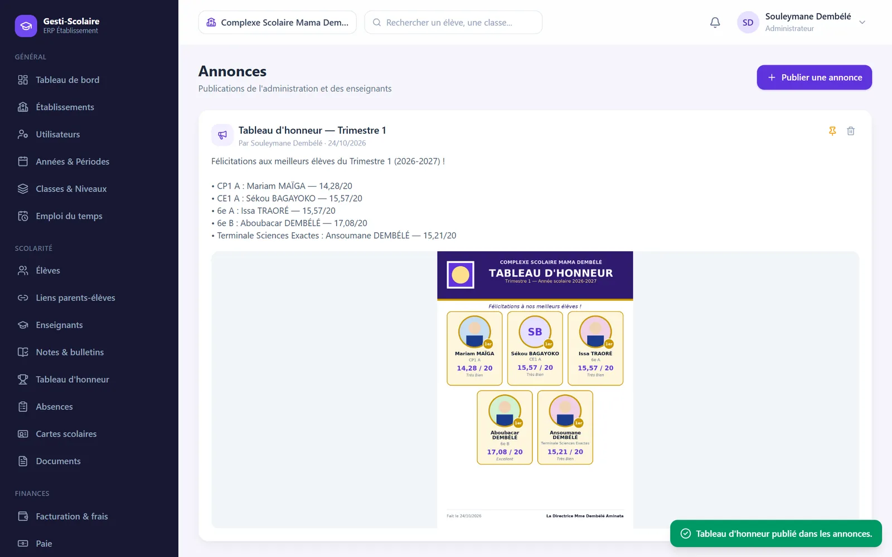
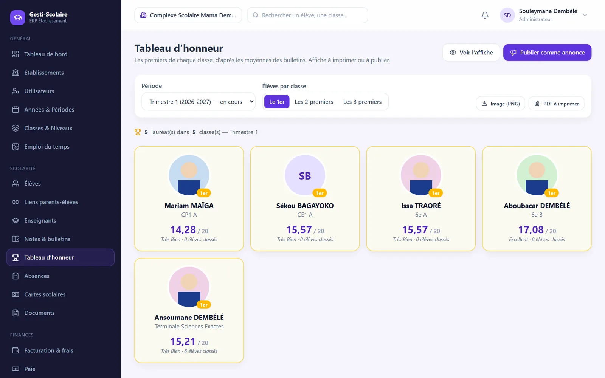

Élèves et inscriptions
Dossiers complets, matricules automatiques, affectation aux classes, recherche instantanée et liste Excel par classe.
Logiciel de gestion scolaire en ligne
Inscriptions, notes et bulletins, tableau d'honneur, cartes scolaires, frais scolaires et paie : Gesti-Scolaire simplifie le travail de la direction, des enseignants et du comptable, et garde les parents informés.


Fonctionnalités
Un seul outil, du premier jour de la rentrée jusqu'au dernier bulletin de l'année.
Dossiers complets, matricules automatiques, affectation aux classes, recherche instantanée et liste Excel par classe.
Carnet de notes par évaluation, moyennes pondérées par coefficient, rangs, mentions et bulletins PDF A4 ou A5.
Les premiers de chaque classe avec photo, classe et moyenne, sur une affiche prête à imprimer ou à publier.
Cartes d'identité scolaire avec photo, QR code de vérification, code-barres du matricule, signature et cachet.
Barèmes par niveau, bourses et réductions, factures A4 et reçus A5 en FCFA avec le montant en lettres.
Enseignants, contrats, éléments de salaire, avances et bulletins de paie générés automatiquement.
Emplois du temps par classe et par enseignant, suivi des absences et retards, sanctions et récompenses.
Certificats de scolarité, attestations, convocations, fiches de permission… avec l'en-tête de votre école.
Annonces illustrées pour tous, les élèves, les parents ou les enseignants, messagerie interne et notifications.
Tableau d'honneur
Dès que les moyennes sont calculées, Gesti-Scolaire désigne les premiers de chaque classe et compose une affiche aux couleurs de votre établissement : photos, noms, classes et moyennes.

Communication
Publiez une annonce avec ses photos : réunion, sortie, résultats, tableau d'honneur. Chacun la retrouve sur son téléphone, même sans installer d'application.

Résultats scolaires
Saisissez les notes par évaluation : Gesti-Scolaire calcule les moyennes par matière avec les coefficients, la moyenne générale, le rang et la mention de chaque élève, puis prépare les bulletins.

Pour qui ?
Chaque utilisateur ne voit que ce qui le concerne.
Vue d'ensemble, statistiques, classes, personnel, documents officiels et validation des bulletins.
Carnet de notes, appel et absences, emploi du temps et annonces pour leurs classes.
Frais scolaires, encaissements, reçus, factures, bourses et paie du personnel.
Absences, retards, sanctions et récompenses, vie scolaire au quotidien.
Notes, bulletins, absences et annonces de leurs enfants, sur leur téléphone.
Leurs résultats, leur emploi du temps et les annonces de l'école.
Sécurité et données
Les données de votre établissement sont strictement séparées de celles des autres écoles.
Téléchargez à tout moment une archive complète de vos données, avec des fichiers Excel lisibles.
Un élève, une classe ou une note supprimés par erreur se restaurent en un clic, avec tout ce qui y était lié.
Comptes personnels, mots de passe protégés, droits adaptés à chaque fonction.
Les opérations sensibles sont tracées : vous savez qui a fait quoi, et quand.
Un groupe scolaire peut gérer plusieurs écoles et passer de l'une à l'autre en un clic.
Sur téléphone
Gesti-Scolaire s'utilise depuis le navigateur du téléphone et peut s'installer sur l'écran d'accueil comme une application, sans passer par un magasin d'applications.
Tarifs
Le prix dépend de la taille de votre école. Choisissez la durée qui vous convient, tout est inclus.
Sur devis
Pour découvrir Gesti-Scolaire sur un trimestre.
Sur devis
Un semestre complet, du début à la fin.
Sur devis
Toute l'année scolaire, de la rentrée aux résultats.
Sur devis
Deux années scolaires, l'esprit tranquille.
Questions fréquentes
Non. Gesti-Scolaire fonctionne en ligne, depuis un navigateur (Chrome, Edge, Firefox…), sur ordinateur, tablette ou téléphone. Une connexion internet suffit.
Nous créons l'espace de votre établissement et le compte de son administrateur. Vous ajoutez ensuite vos années scolaires, classes, matières, élèves et personnel, puis vous invitez vos enseignants et vos parents d'élèves.
Non. Chaque établissement dispose de son propre espace : ses élèves, notes, finances et documents ne sont visibles que par ses utilisateurs.
Non. Les parents se connectent depuis le navigateur de leur téléphone et peuvent, s'ils le souhaitent, ajouter Gesti-Scolaire à leur écran d'accueil.
Oui, à tout moment : la page « Archives » produit un fichier ZIP avec toutes vos données en Excel. Les listes d'élèves et d'enseignants s'exportent aussi en un clic.
Vous êtes prévenu à l'avance. Si l'abonnement n'est pas renouvelé, l'accès est suspendu mais vos données sont conservées : elles redeviennent accessibles dès le renouvellement.
Démonstration gratuite
Laissez-nous vos coordonnées : nous vous rappelons pour organiser une démonstration, sans engagement.